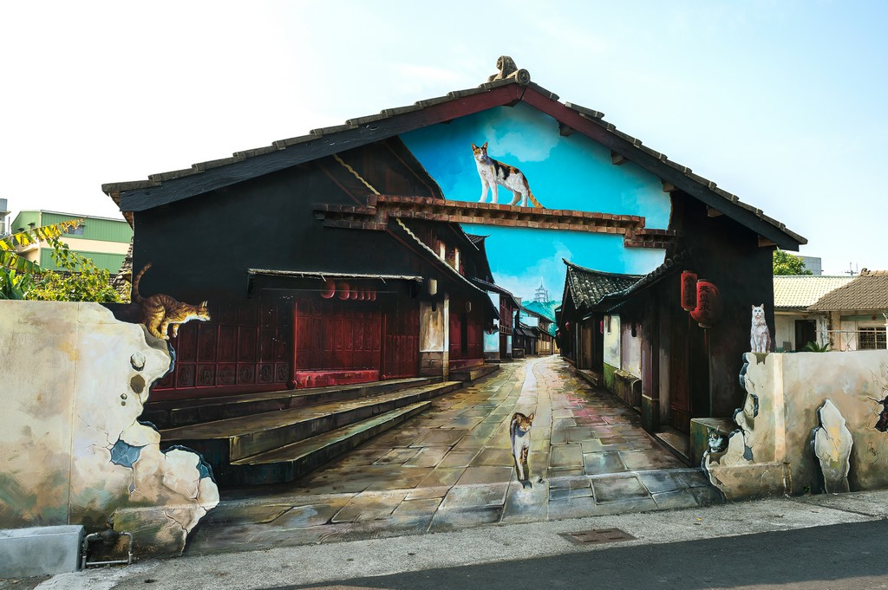

大士爺廟 |
|
大士爺普渡祭是民雄鄉中樂、西安、東榮三村的宗教盛會。在1916年報導時，嘉義打貓大士爺就已與嘉義城隍爺、北港媽祖、大莆林水鬼齊名。大士爺、民雄鬼屋、柳相士被譽為「民雄三寶」 資料來源::維基百科 |
|
民雄鬼屋 |
|
日治時期的民雄有三位富豪，地方上稱為「三大舍」：第一舍何立為是民雄鄉第一任鄉長，人稱「阿立仔舍」；第二舍陳實華，為民雄五穀王廟主委，人稱「阿賊仔舍」；第三舍劉容如，地方稱「劉員外」。劉容如為當地士紳劉玉崗的曾孫，在斗南、大埤，南到水上、太保都有不少土地 資料來源:維基百科 |
 |
菁埔貓世界 |
|
嘉義民雄舊有地名為「打貓」，因為有一個貓字，所以成就了這一座民雄貓咪彩繪村-菁埔彩繪村。一幅幅可愛的貓咪，栩栩如生、畫風精緻的彩繪牆，還有特殊3D彩繪畫作讓人可以邊拍照邊玩！ 資料來源:Daisy yohoho |
 |